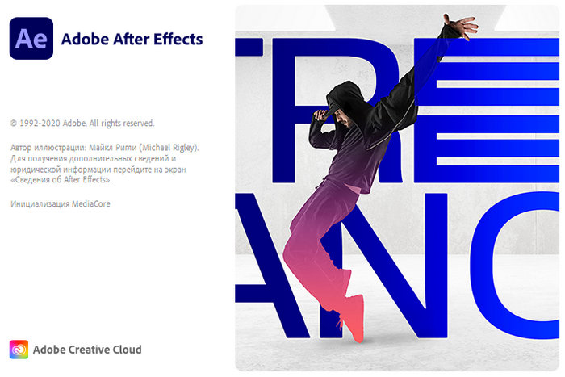
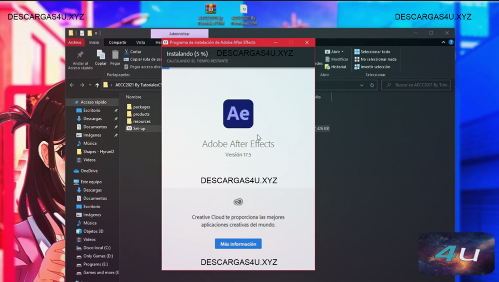
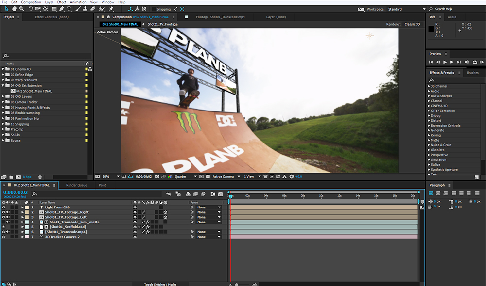
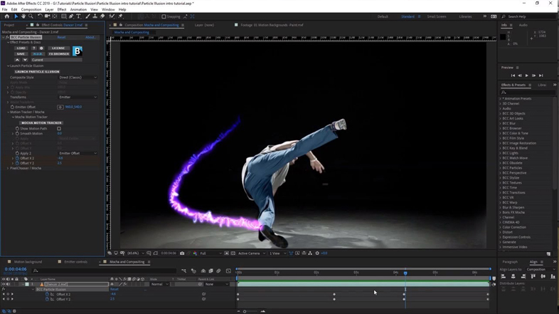

Adobe After Effects CC 2021 un programa muy avanzado para crear animaciones profesionales y efectos visuales impactantes, con herramientas flexibles y que ahorran tiempo con un potencial creativo inigualable. El programa tiene cientos de efectos visuales, transiciones y textos fáciles de usar. After Effects le permite crear gráficos animados y efectos especiales con estándares de calidad superiores.
Es importante destacar que la aplicación se integra perfectamente con otros productos de Adobe, incluidos Premiere Pro, Photoshop e Illustrator, lo que le permite trabajar de manera eficiente.
Los beneficios clave de After Effects Mega son la eficiencia, la productividad y la versatilidad. Adobe también ofrece funciones de scripting avanzadas que amplían la funcionalidad de las aplicaciones.
La herramienta «Adobe After Effects CC 2021 Full» también contiene software adicional como Cine 4D, Keylight o moka y está estrechamente relacionada con los contenidos respectivos. Los objetos de la popular aplicación de Cine 4D para el modelado 3D y animación mezcla según Adobe perfectamente en el flujo de trabajo del proyecto de After Effects CC con uno.
Cracracteriticas Adobe After Effects CC 2021 v17.5
Los nuevos pines Avanzado y Doblado le permiten girar con precisión, doblar, curvar y escalar animaciones.
Genere un pase de profundidad con el procesador After Effects Classic 3D o INEMA 4D. Compone objetos rápida y fácilmente en el espacio 3D. Aplique efectos de profundidad como Profundidad de campo, Niebla 3D y Profundidad mate para que los elementos se vean naturales o utilice datos de profundidad para simular las apariencias 3D.
Un nuevo motor de expresión de JavaScript sobrecarga su flujo de trabajo de animación y procesa expresiones hasta 6 veces más rápido. Escriba expresiones con un nuevo editor que hace que la creación de expresiones sea más accesible.
Cree gráficos en movimiento que se puedan adaptar a los cambios de longitud al tiempo que preserva la integridad de los fotogramas clave protegidos. Exporte sus diseños como plantillas de Motion Graphics para una mayor flexibilidad editorial.
Elimine las conjeturas de los ajustes de la curva con las nuevas e innovadoras herramientas Lumetri Color para la corrección selectiva del color. Cada curva tiene dos ejes con valores emparejados, lo que facilita el ajuste preciso de los colores.
Obtenga representaciones de color precisas y mantenga la fidelidad de color en su flujo de trabajo, desde After Effects hasta Premiere Pro y en las pantallas rec709, rec202 y P3.
Intercambio de archivos de plantillas Motion Graphics mejorado con Premiere Pro.
Obtenga un seguimiento planar de precisión, rápido y preciso con el complemento Mocha AE acelerado por GPU. Se actualiza con una interfaz simplificada, incluye soporte de retina / alto DPI y funciona de forma nativa dentro de After Effects.
Salta al video inmersivo con soporte para 180 VR. Agregue efectos VR y trabaje con 180 y 360 materiales indistintamente. Publique videos terminados en el formato Google VR 180 en YouTube u otras plataformas. Una nueva opción de Modo Teatro le permite previsualizar el contenido rectilíneo en una pantalla montada en la cabeza (HMD).
Los nuevos efectos de GPU y de optimización del rendimiento incluyen Relleno, Curvas, Exposición, Ruido, Tritono, Establecer mate y Balance de color. El efecto Wave Warp ahora es multiproceso y se procesa 2-3 veces más rápido mediante el uso de múltiples núcleos de CPU. Experimente la decodificación H.264 y HEVC más rápida en el último macOS.
Las propiedades maestras ahora permiten flujos de trabajo más avanzados con soporte para transformaciones de colapso, reasignación de tiempo, efectos de audio, desenfoque de movimiento, expresiones de formas y formas, cámaras 3D y luces.
¿After Effects principiante? El nuevo panel de Aprendizaje le presenta la línea de tiempo y los controles a través de tutoriales interactivos para comenzar a crear su composición rápidamente.
Importe archivos .fla de Animate como composiciones en capas directamente a After Effects. Envíe sus diseños XD a After Effects con alta fidelidad para agregar animaciones avanzadas o integrarlos en sus proyectos de gráficos en movimiento.
Invite a grupos y miembros del equipo de su libreta de direcciones de la empresa, sin escribir las direcciones, para una comunicación más eficiente.
Obtenga un mejor rendimiento de los formatos de cámara Panasonic, RED y Sony con la última compatibilidad.
Arrastre y suelte activos, como los archivos de Illustrator o Photoshop, en su panel de Bibliotecas de CC para acceder rápidamente a sus composiciones de After Effects. Comparta sus bibliotecas y recursos con miembros del equipo o expórtelos y almacénelos con su proyecto.
Capturas:



Requisitos:
Sistema Operativo
| # | R.minimos | Windows | macOS |
|---|---|---|---|
| 1 | Procesador | Procesador Intel® o de AMD con compatibilidad de 64 bits* (2 GHz o más rápido) | Procesador Intel multinúcleo con compatibilidad de 64 bits |
| 2 | Sistema operativo | Microsoft Windows 7* con Service Pack 1 (de 64 bits)** o la actualización de octubre de 2018 de Windows 10*** (de 64 bits), versión 1809 o posterior. | macOS versión 10.13 (High Sierra), macOS versión 10.14 (Mojave), macOS versión 10.15 (Catalina) (Se recomienda la versión macOS 10.13.6 o posterior para conseguir el mejor rendimiento). |
| 3 | RAM | 2 GB o más (se recomiendan 8 GB) | 2 GB o más (se recomiendan 8 GB) |
| 4 | Tarjeta gráfica | nVidia GeForce GTX 1050 o equivalente; se recomienda nVidia GeForce GTX 1660 o Quadro T1000. | nVidia GeForce GTX 1050 o equivalente; se recomienda nVidia GeForce GTX 1660 o Quadro T1000. |
| 5 | Espacio en disco duro | 3,1 GB o más de espacio disponible en el disco duro para la instalación de 64 bits; se necesita espacio libre adicional durante la instalación. | 4 GB o más de espacio disponible en el disco duro para la instalación; se necesita espacio libre adicional durante la instalación. |
| 6 | Resolución del monitor | Pantalla de 1280 x 800 con Escala de IU al 100 %, con color de 16 bits y 512 MB o más de VRAM dedicado; se recomiendan 2 GB. | Pantalla de 1280 x 800 con Escala de IU al 100 %, con color de 16 bits y 512 MB o más de VRAM dedicado; se recomiendan 2 GB*. |
Enlaces
-
Adobe After Effects CC 2021 v17.5 – (Español) 64 bits
" Idiomas: Multilenguaje (Español) | Windows | Peso: 2.10 GB | Pre-activado | 64 bits "
Video de como Instalar
VISITE NUESTRO CANAL DE YOUTUBE PARA VER TODO EL CONTENIDO. NECESITA SER +18 E INICIAR SESION